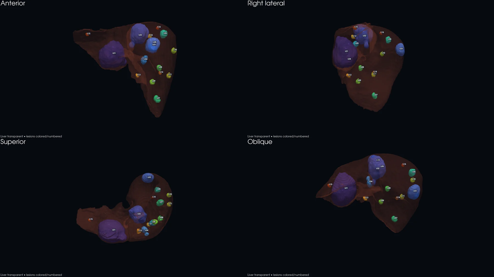

166.82 → 170.34 mL
CT comparison · 25 Dec 2025 → 19 Jan 2026
A clearer view of every liver lesion.
Explore a touch-enabled 3D liver reconstruction, lesion-level measurements, interval comparisons, and annotated source images in one responsive dashboard.
Overall assessment: broadly stable disease burden with minimal interval change.

Latest tumor burden10.22%
At a glance
Disease burden dashboard
Measurements are generated from automated 3D masks and should be treated as preliminary.
9.78% → 10.22%
64.3 → 64.5 mm
Matched plus uncertain
Tumor burden
Percentage of liver volume
9.78%December
166.82 mL of 1,706.42 mL
10.22%January
170.34 mL of 1,667.05 mL
Change+3.52 mL tumor volume+0.44 percentage points
Interpretation
Key observations
- 01Dominant segment 3 lesion
Stable axial diameter; automated volume increased 10.2%.
- 02Segment 8 lesion
Essentially unchanged by diameter and volume.
- 03Smaller lesions
Predominantly stable; volumetric percentages are contour-sensitive.
- !Necrosis limitation
Low attenuation is only a proxy and cannot confirm necrosis.
Touch, rotate, inspect
Interactive 3D anatomy
The translucent liver and each colored lesion are separate high-resolution objects.
Loading interactive anatomy…Volume distribution
Which lesions drive total burden?
The two largest lesions account for the great majority of segmented tumor volume.
Lesion explorer
Measurements and source-image comparisons
Select any card for a full-resolution comparison and detailed metrics.
Designed clinical-style report
Download the complete 21-page PDF
Includes the executive summary, per-lesion pages, annotated CT comparisons, consolidated measurements, methodology, and safety limitations.

Clinical safety notice
This dashboard is a computer-assisted visualization, not a radiologist-signed diagnosis, formal RECIST assessment, or surgical-planning system. Do not use it alone to start, stop, or alter treatment. Small lesions, lesion matching, and low-attenuation estimates require specialist review.